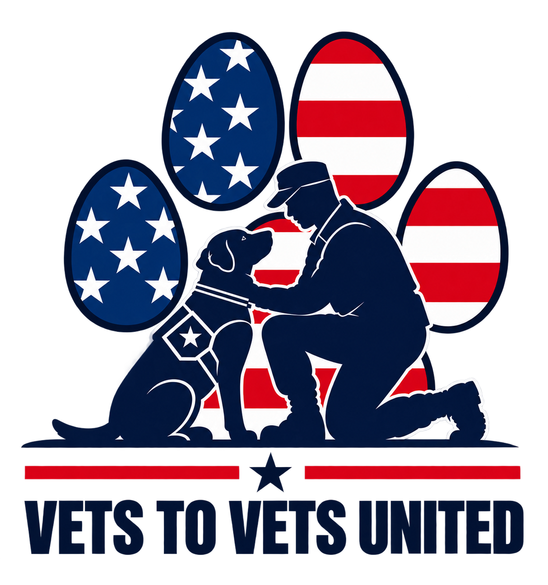
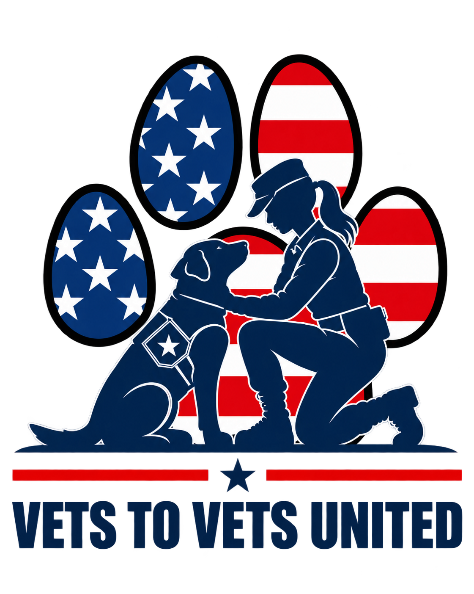

01
Learn about the teams
Read the veteran’s story, meet their dog, and learn what makes their partnership meaningful.
Adopt a veteran-and-dog team with a recurring monthly gift. Your steady support helps Vets To Vets United sustain the care, training, and connection behind every partnership.


A simple way to stay with the mission
Each tag opens the door to a real team’s story. Choose the partnership that speaks to you, make a monthly commitment, and follow their journey.
Read the veteran’s story, meet their dog, and learn what makes their partnership meaningful.
Choose that team when you set up your recurring monthly gift through the Dog Tags donation form.
Each team page shows current monthly support toward its $1,000 goal.
Seven partnerships. Seven stories.
Select a team thumbnail to open their portrait, story, and monthly support page. Use Previous and Next to move through all seven partnerships.
Why monthly matters
Recurring gifts create a dependable foundation for the work surrounding each veteran-and-dog team. One decision today becomes support they can count on month after month.
Monthly giving is processed securely through Network for Good.
Carry the tag.
Follow the team.
Stay for the journey.

Sponsor this team
Help this team reach its $1,000 monthly goal through the secure Network for Good campaign form.
Their story
Team story